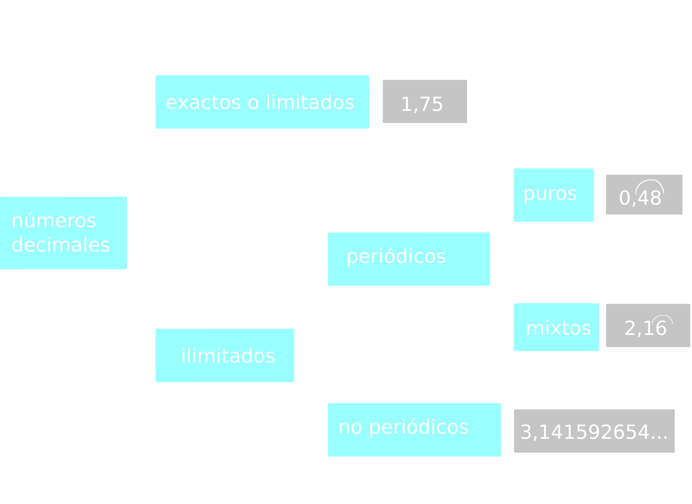

Tema 2: Fracciones y números decimales
¿Cómo se llama el número de arriba de las fracciones?
1
Numerador
2
Denominador
3
Resto
4
Cociente
... y el número de abajo?
1
Numerador
2
Denominador
3
Resto
4
Cociente
1
Indica si las siguientes fracciones son propias o impropias. Si son impropias, represéntalas como un número mixto:
E
\[ \frac{5}{3} \]
a
\[ \frac{2}{9} \]
b
\[ \frac{7}{2} \]
c
\[ \frac{8}{5} \]
Fracciones equivalentes
2
Indica cuatro fracciones equivalentes a las siguientes, dos por ampliación y dos por simplificación:
a
\[ \frac{8}{24} \]
b
\[ \frac{9}{18} \]
c
\[ \frac{4}{12} \]
3
Calcula la fracción equivalente irreducible de:
E
\[ \frac{14}{21} \]
a
\[ \frac{48}{32} \]
b
\[ \frac{75}{60} \]
c
\[ \frac{165}{99} \]
Calcular fracciones equivalentes con denominador común
4
Ordena los siguientes conjuntos de fracciones:
a
\[ \frac{3}{4}, \frac{2}{3}, \frac{1}{6} \]
a
\[ \frac{1}{2}, \frac{3}{5}, \frac{4}{7} \]
b
\[ \frac{3}{4}, \frac{2}{3}, \frac{1}{5}, \frac{4}{7}, \frac{5}{6}, 1 \]
c
\[ \frac{2}{5}, \frac{7}{10}, \frac{5}{9}, \frac{4}{9}, \frac{10}{18} \]
Suma y resta de fracciones
5
Realiza las siguientes sumas y restas de fracciones. Simplifica el resultado si es posible:
a
\[ \frac{3}{4} + \frac{2}{4} \]
a
\[ \frac{3}{4} + \frac{1}{2} \]
b
\[ \frac{3}{4} + \frac{1}{5} \]
c
\[ \frac{3}{4} - \frac{1}{5} \]
5
Realiza las siguientes sumas y restas de fracciones. Simplifica el resultado si es posible (cont.):
d
\[\frac{3}{4} + \frac{1}{5} + \frac{2}{3} \]
e
\[ \frac{3}{4} - \frac{1}{5} - \frac{2}{3} \]
f
\[ \frac{3}{4} + \frac{1}{5} + \frac{2}{3} + \frac{5}{12} \]
g
\[ \frac{3}{4} - \frac{1}{5} + \frac{5}{6} - \frac{8}{10} \]
Multiplicación y división de fracciones
6
Opera:
a
\[ \frac{2}{3} \cdot \frac{4}{5} \]
b
\[ \frac{5}{7} \cdot \frac{2}{5} \]
c
\[ \frac{3}{6} \cdot \frac{2}{5} \]
d
\[ \frac{1}{2} \cdot \frac{3}{5} \cdot \frac{5}{2} \]
6
Opera (cont.):
e
\[ \frac{2}{3} : \frac{4}{5} \]
f
\[ \frac{5}{7} : \frac{2}{5} \]
g
\[ \frac{3}{6} : \frac{2}{5} \]
h
\[ \frac{1}{2} : \frac{3}{5} \]
Operaciones combinadas con fracciones
7
Calcula y simplifica el resultado:
a
\[ \frac{1}{2} \cdot (\frac{3}{2} + \frac{2}{3}) \]
b
\[ \frac{1}{2} \cdot \frac{3}{2} + \frac{2}{3} \]
c
\[ \frac{1}{2} + \frac{3}{2} \cdot \frac{14}{5} \]
d
\[ \frac{2}{5} \cdot \frac{1}{2} + \frac{4}{3} - \frac{1}{6} \]
7
Calcula y simplifica el resultado (cont.):
e
\[ \frac{2}{5} + \frac{1}{2} \cdot \frac{4}{3} - \frac{1}{6} \]
f
\[ \frac{3}{2} - \frac{4}{5} \cdot \frac{5}{6} \]
g
\[ (\frac{3}{2} - \frac{4}{5}) \cdot \frac{5}{6} \]
h
\[ \frac{7}{2} + \frac{1}{5} \cdot \frac{5}{6} \]
7
Calcula y simplifica el resultado (cont.):
i
\[ \frac{5}{3} : \frac{1}{9} + \frac{1}{6} \]
j
\[ -\frac{4}{7} + \frac{12}{5} - \frac{3}{4} \cdot (-\frac{5}{6}) \]
k
\[ -\frac{4}{7} + (\frac{12}{5} - \frac{3}{4}) \cdot (-\frac{5}{6}) \]
l
\[ \frac{4}{7} + (-\frac{12}{5}): (-\frac{4}{4}) \]
Números decimales
8
Ordena los siguientes número decimales:
a
0.2, 1.123, 0.123, 1.2
b
2.3, 1.25, -0.8, 0.5, -0.15
c
0.5, 0.48, -0.345, 0.456
9
Realiza las siguientes sumas y restas de números decimales:
a
\[ 0.234 + 23.12 \]
\[ = 23.354 \]
b
\[ 12.812 + 1.00234 \]
\[ = 13.81434 \]
c
\[ 13.123 - 4.54 \]
\[ = 8.583 \]
10
Realiza las siguientes multiplicaciones y divisiones de números decimales:
a
\[ 123.12 \cdot 2.3 \]
\[ = 283.176 \]
b
\[ 234.45 : 1.2 \]
\[ = 195.35 \]
c
\[ 127.28 \cdot 1.7 \]
d
\[ 284 : 0.3 \]
e
\[ 0.37 : 8 \]
f
\[ 3.28 \cdot 8 \]
Luns, 4 de noviembre
R1
Opera:
a
\[ \frac{2}{3} - (2 \cdot \frac{4}{5} + \frac{1}{5}) \]
b
\[ \frac{1}{2} - \frac{5}{2} \cdot (\frac{1}{3} - \frac{4}{5}) \]
Paso de fraccion a decimal
11
Pasa las siguientes fracciones a número decimal:
a
\[ \frac{1}{9} \]
b
\[ \frac{1}{2} \]
c
\[ \frac{3}{11} \]
12
Pasa las fracciones a decimal y opera:
a
\[ \frac{2}{3} - (2 \cdot \frac{4}{5} + \frac{1}{5}) \]
b
\[ \frac{1}{2} - \frac{5}{2} \cdot (\frac{1}{3} - \frac{4}{5}) \]
Martes, 5 de noviembre
13
Realiza las siguientes operaciones combinadas con números decimales:
a
\[ -3.14 \cdot (-2 + 1.8 \cdot 3.9) \]
b
\[ (-0.94 + 3.91) : 8.51 \]
c
\[ 28.36 - 5.2 \cdot 4.02 \]
Míercoles, 6 de noviembre

14
Indica de que tipo son los siguientes números decimales:
a
\[ 3.1222222222222\dots \]
Periódico mixto
b
\[ 0.13 \]
Exacto
c
\[ 0.232323232323\dots \]
Periódico puro
d
\[ 0.2144444444444\dots \]
Periódico mixto
Paso de decimal a fracción
15
Pasa los siguientes números decimales a fracción y simplifica donde sea posible:
a
\[ 3.4 \]
\[ = \frac{34}{10} = \frac{17}{5} \]
b
\[ 2.52 \]
\[ = \frac{252}{100} = \frac{36}{25} \]
c
\[ 0.125 \]
\[ = \frac{125}{1000} = \frac{1}{8} \]
R2
Indica si las siguientes fracciones son propias o impropias. Convierte las impropias a número mixto:
a
\[ \frac{10}{9} \]
\[ = 1 +\frac{1}{9} \]
b
\[ \frac{13}{20} \]
(propia)
c
\[ \frac{10}{7} \]
\[ = 1 +\frac{3}{7} \]
d
\[ \frac{5}{8} \]
(propia)
Jueves y Viernes, 5 y 6 de noviembre
Problemas